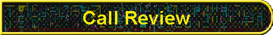

|

|
|
Use CallReview to browse and annotate a collection of wave files. CallReview was designed to make it easy to listen to call recordings. These wave files were recorded by a Windows system set up to monitor random calls to customer service. As a trainer, it was my job to listen to these recordings, so Bob wrote this software to help me. However, CallReview will work with any wave files with a .WAV filename extension, regardless of the sampling rate. It will not however work with other audio formats. From the CallReview main and only screen, you can select a drive and directory for wave files (calls to review) and only wave files appear on the list. As you scroll through them the length of each wave file appears. You can also use the next and previous buttons or click on the filename directly. When the call is playing, you can use the slider to move back and forth through it and always track your relative position in the call. You can annotate the call in the edit box at any time. Annotations are saved in a text file with the same base file name. If you reopen a call with a previous annotation, that annotation appears, and you can keep adding to it. Because the main point was to have a program I could easily use, there are a lot of keyboard shortcuts:
A couple of quirks: sometimes it gives you an MCI error 302, a bug that we haven't tracked down. It seems t happen if you reach the end of a wave file and the program toggles into a paused state, but you then press pause or stop. Just reselect the file and the program will figure out you are back in play mode. If you click on the initial splash screen, you must click in an empty area to make it disappear. We can't figure out how to make visual BASIC do splash screens right! Enhancements: we need to implement the Save button of course. I'm still thinking about how I want that done. We'd like to let you keep the focus in the edit box and control the slider with the alt-arrows and the mouse. Right now, to control the slider with the arrows, you have to focus on it first. |
Visit these Spare Time Gizmos
|